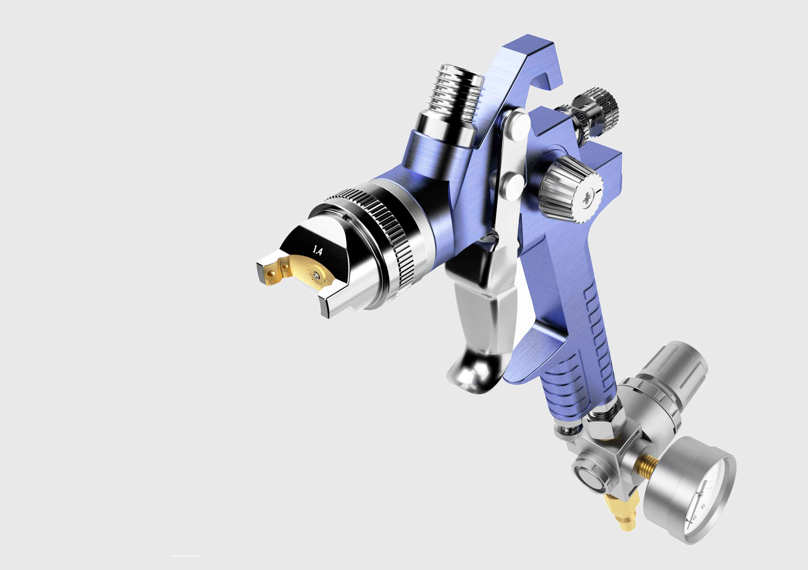

What I do
What I've Done
About Me
Contact
Lacquer
An exercise in Computer Aided Design, involving modeling the geometry of an an existing tool, and rendering this geometry with artificial textures.
My Roles:
Geometric modeling - Rendering

Next Project
Real Estate Fair